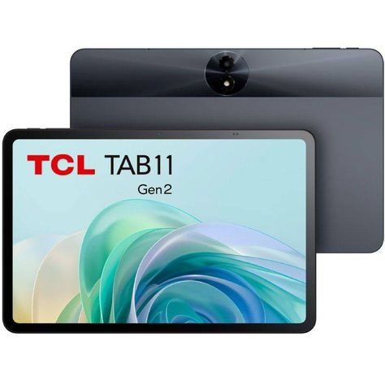
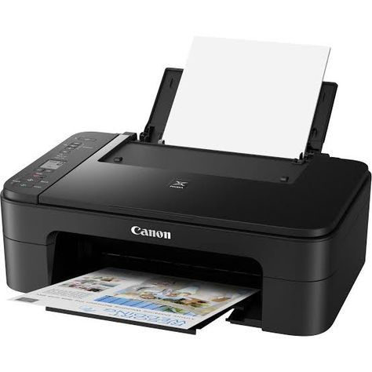

Pengertian
Ponsel cerdas atau ponsel pintar (smartphone) adalah kelas ponsel dari ponsel dan perangkat komputasi ginerak serbaguna.
Ponsel ini dibedakan dari ponsel berfitur dengan kemampuan perangkat keras yang lebih kuat dan sistem operasi seluler yang luas, yang menyaranakan perangkat lunak yang lebih luas,
internet (termasuk mesin pencari melalui broadband seluler),
dan fungsi multimedia (termasuk musik, video, kamera, dan permainan),
bersama fungsi-fungsi inti ponsel seperti panggilan suara dan pesan teks.
biasanya berisi sejumlah cip rangkaian terpadu IC logam-oksida-semikonduktor (MOS)
Fungsi Smartphone
berfungsi untuk menjalankan aplikasi, kamera, telepon,
pesan teks, mengakses internet dan fitur-fitur yang Anda gunakan .
Selain itu fungsi dari operasi smartphone memungkinkan pengguna berinteraksi
dengan perangkat lain dan memanfaatkan semua fitur untuk memenuhi kebutuhan pengguna secara efektif dan efisien.
Jenis Dan Macam-Macam Perangkat Akhir
Komputer desktop

Perangkat yang biasa digunakan untuk mengelola data, berkomunikasi dalam jaringan ataupun untuk menjalankan aplikasi
Tablet

Perangkat layar sentuh yang digunakan untuk berbagai keperluan untuk menggunakan aplikasi,bermain game atau pekerjaan ringan
Printer

Perangkat cetak yang terhubung langsung ke jaringan.berguna untuk mencetak dokumen tanpa perlu koneksi fisik langsung ke perangkat
dan lain-lain...
Lampiran File Tutorial Hosting
Langkah-langkah untuk hosting pada aplikasi GitHub :